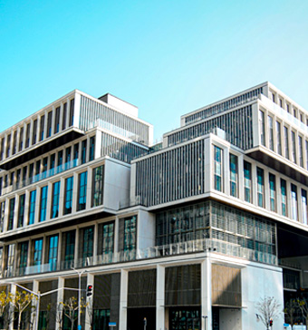

NYU Shanghai

Who We Are
NYU Shanghai is China’s first Sino-US research university and the third degree-granting campus of the NYU Global Network. We were founded in 2012 by New York University and East China Normal University with the support of the city of Shanghai and the
district of Pudong.
NYU Shanghai seeks to cultivate globally-minded graduates through innovative teaching, world-class research, and a commitment to public service.
Our student body currently consists of nearly 2,000 undergraduate and graduate students, half of whom are from China. Students from the United States and some 70 other countries represent the other half. Our faculty of renowned scholars,
innovators, and educators are recruited from the world’s best research universities.
Why apply to NYU Shanghai?
Students who choose to enroll in NYU Shanghai become students at China’s first-ever Sino-American joint-venture University. Our location in the heart of China's largest city and identity as an institution of higher education that is simultaneously American
and Chinese positions our students to be successful in any discipline, anywhere in the world after graduation.
At NYU Shanghai, you will:
- Gain a global perspective. Our rigorous liberal arts and sciences curricula prepares students to become creative leaders with global vision. Even as they immerse themselves in Chinese culture, language, and society, NYU Shanghai students
will graduate with the same education, diploma and qualifications as those enrolled at the NYU campuses in New York City and Abu Dhabi.
- Participate in cross-cultural exchange on a daily basis. Half of all NYU Shanghai students are from across China, and the other half are from more than 70 countries around the world. Non-Chinese students are required to study Mandarin
Chinese and achieve proficiency by the time they graduate.
- Explore new ideas with world-renowned faculty. With an 8-to-1 student-to-faculty ratio, NYU Shanghai students can attend classes that are small enough to promote free debate and enable deep discourse, and have many opportunities to
serve as research assistants to NYU professors and conduct their own research.
- Enjoy unprecedented opportunities in China’s most innovative and cosmopolitan city. Shanghai is home to exciting start-ups and some of the world’s largest multinational corporations. Because of our location in the heart of Shanghai’s
international business district, students have easy access to internships in numerous industries.
- Join an expansive NYU network. As the largest private research university in the United States, NYU supports three global campuses—New York, Abu Dhabi, and Shanghai—and 12 study centers around the world. NYU Shanghai students can spend
up two semesters abroad in any location in the network. Upon graduation, students become part of a global network of over 600,000 alumni.
Useful Links